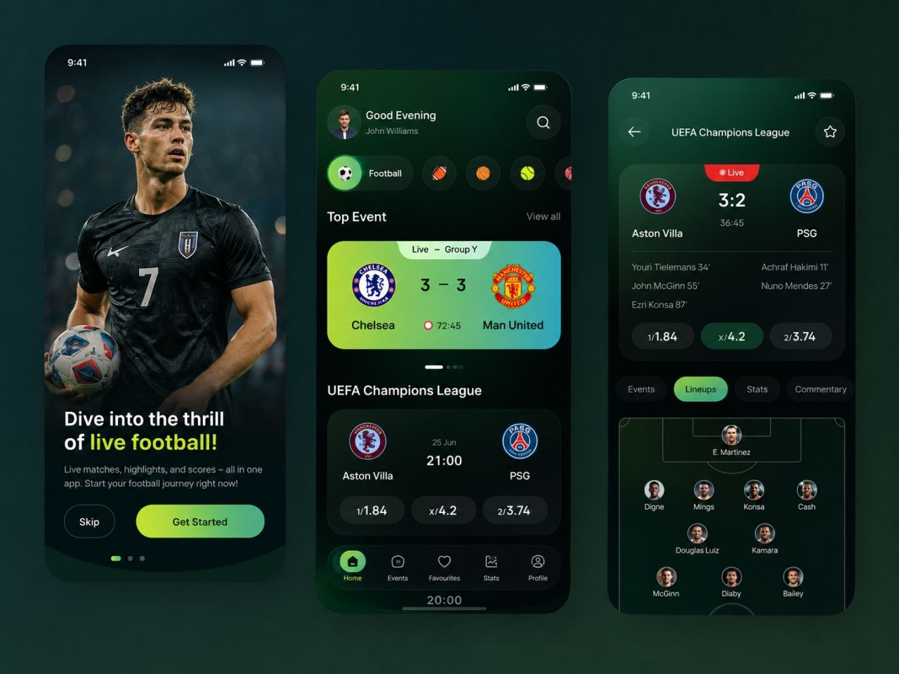
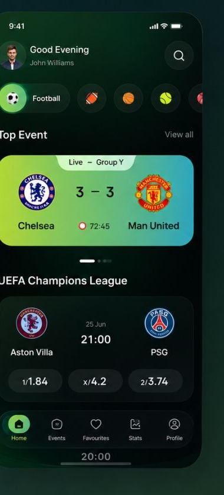
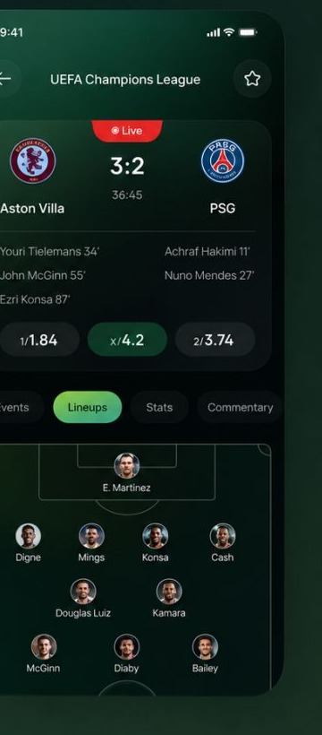
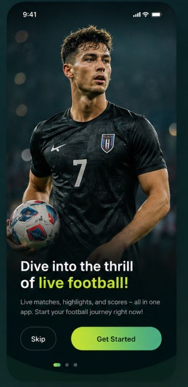
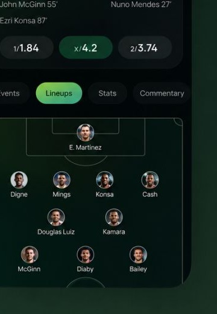

Live scores and match intelligence
ScoreBall is a mobile sports experience designed around live scores, match context, statistics, and the moments fans care about most. The interface uses a strong visual hierarchy so the product can stay useful when users are checking information quickly.

Why this product exists
Sports products compete with time. Users often open an app for one immediate answer, but dense information can make that answer difficult to find. ScoreBall needed to balance live information with deeper data without making the interface feel crowded.
Who it is for
Sports fans who check live scores, fixtures, match details, team performance, and statistics during or around games. The primary context is fast, repeated mobile use.
The design challenge
ScoreBall is a mobile sports experience designed around live scores, match context, statistics, and the moments fans care about most. The interface uses a strong visual hierarchy so the product can stay useful when users are checking information quickly.
What needed to change
The design work starts by turning broad business friction into a small set of user-facing problems that can be prioritized and solved.
Problem statement
- The score and live state must be visible immediately.
- Dense statistics can compete with the primary match story.
- Repeated navigation should feel predictable.
- Fans need a clear path from overview to detailed statistics.
Design hypothesis
Create a high-signal mobile information hierarchy: live state first, essential context second, deeper statistics third. Consistent navigation, match cards, status states, and component patterns reduce cognitive load while preserving depth.
What the product needed to do
A case study should make the product legible before showing every screen. These are the major capabilities that shaped the information architecture.
How I approached the problem
The process is shown as a decision-making loop rather than a decorative five-step diagram.
Design decisions with a reason
Instead of listing deliverables, connect the interface back to the user or business problem it was meant to solve.
Design for one-second scanning
Translate the insight into a visible interface behavior, clearer hierarchy, or more predictable flow. The goal is to reduce friction without removing useful context.
Separate live from secondary information
Translate the insight into a visible interface behavior, clearer hierarchy, or more predictable flow. The goal is to reduce friction without removing useful context.
Use strong status and score hierarchy
Translate the insight into a visible interface behavior, clearer hierarchy, or more predictable flow. The goal is to reduce friction without removing useful context.
Keep repeated interactions consistent
Translate the insight into a visible interface behavior, clearer hierarchy, or more predictable flow. The goal is to reduce friction without removing useful context.
Let the interface do the talking
Large visuals keep the case study grounded in the actual work. Supporting visuals are used where the original showcase does not expose enough detail.




Sonder House →
Modern living, presented with confidence